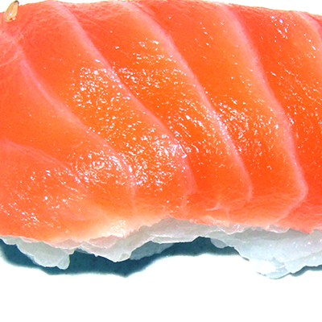

DIETA CHINA

Estamos acostumbrados a ir a restaurantes chinos en los que podemos degustar platos con variedad de carnes: cerdo, pollo, pavo, ternera...
Pero esta no es realmente la comida tradicional china.
La dieta tradicional china se caracteriza por ser muy saludable, ya que es baja en contenido graso y rica en vegetales y fruta, lo que nos aporta una gran cantidad de antioxidantes que contribuyen a prevenir enfermedades.
La dieta que proponemos a continuación está pensada para aquellas personas que deseen alimentarse bien y, por qué no, bajar algunos quilitos.